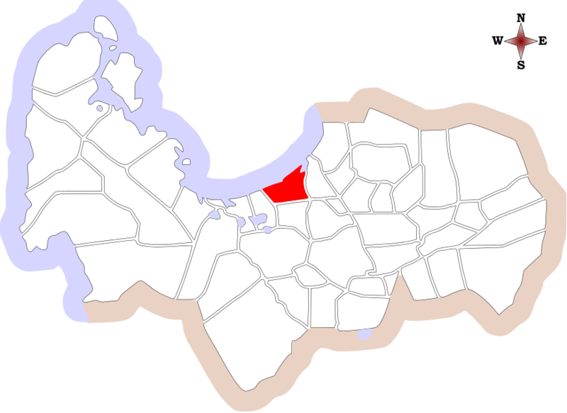
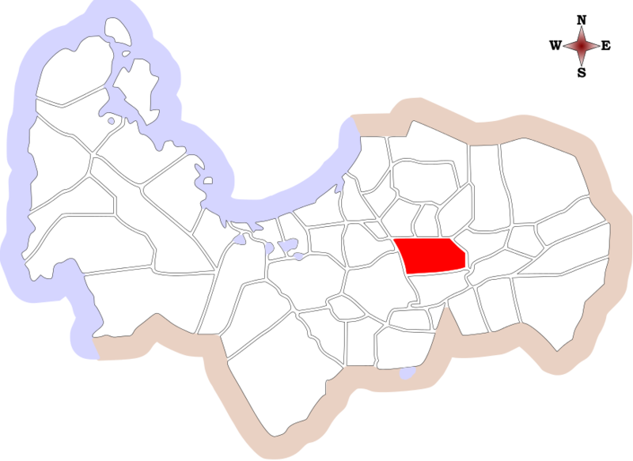

Welcome to
Pangasinan
See the Philippine Wonders, See Pangasinan
See the Philippine Wonders, See Pangasinan
Take a relaxing walk, cosy up in a local pub and plan your next short break. There's so much to discover in Pangasinan.

There are 123 islets in the protected region, each islet has a distinctive shape and is thought to have developed millions of years ago. Some of the islands have limestone cliffs, others have white sand beaches for visitors to enjoy.

The Balingasay River in Bolinao is regarded as one of the cleanest rivers in the Philippines. Although you can swim in the river, observe birds, or even attempt fishing there, a river cruise is one of the most tranquil ways to take it all in.

The Death Pool, a difficult-to-access natural pool, has helped the beach gain popularity among tourists in recent years. The Death Pool is not actually dangerous, despite its moniker.
Experience beautiful wide open spaces. Journey along epic trails, hike to mountain peaks and discover the stunning landscapes of Pangasinan.

The Bangus Festival is a ten-day celebration taking place in Dagupan City every April. The festivities include an array of sports competitions, fairs, and street parties. And of course, the festival is full of culinary demonstrations, tastings, and contests.

This town -- home of the sweetest, reddest and juiciest watermelons in the country -- will hold its Pakwan Festival on Jan. 26, the biggest ever since its inception six years ago, in a bid to further boost agriculture and local tourism.


Urdaneta City, Pangasinan celebrates Dumayo Festival annually to give thanks for the blessings that the city has received throughout the years. Other activities that gave meaning to the celebration were: Basbas ng Pag-iisang Dibdib (free mass wedding) and bloodletting activity.
During this year’s celebration on Jan. 12, 24 decorated and painted carabao were paraded on the streets to represent each of the town’s villages. Even nearby provinces participate in this two-day celebration to join with the parade of beautifully decorated carts.